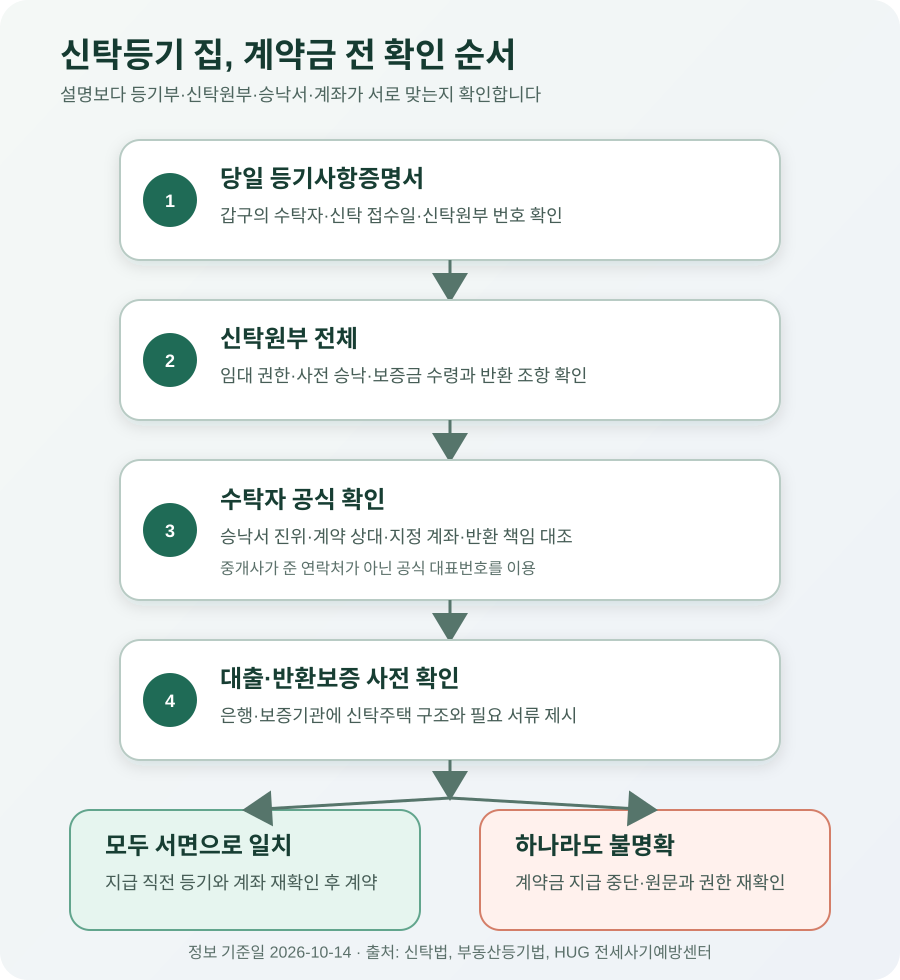

등기부에 ‘신탁’이 적힌 집, 집주인과 전세계약해도 될까?
등기부 갑구에 신탁이 적혀 있다면, 예전 소유자와 평소 전세계약하듯 바로 계약금을 보내면 안 됩니다. 신탁등기가 끝나면 대외적인 소유자는 등기부에 적힌 수탁자, 즉 신탁회사가 됩니다. 다만 신탁원부와 수탁자의 서면 승낙에 따라 위탁자가 임대할 수 있는 경우도 있으므로 ‘무조건 신탁회사와 계약한다’고 외울 일도 아닙니다. 계약 전에는 누가 임대할 권한이 있는지, 누구 계좌로 보증금을 보내야 하는지, 만기 때 누가 반환하는지, 공매 때 임차권을 주장할 수 있는지를 한 묶음으로 확인하세요. 하나라도 서면으로 확인되지 않으면 계약금 지급을 미루는 편이 안전합니다.
신탁등기가 있으면 ‘원래 집주인’과 ‘현재 소유자’가 다릅니다
부동산 신탁은 집을 맡기는 사람인 위탁자가 재산을 관리하거나 담보로 활용할 목적으로 수탁자에게 이전하고, 수탁자가 정해진 목적에 따라 관리·처분하는 법률관계입니다. 신탁회사가 수탁자인 경우가 많고, 대출금을 우선 변제받는 금융기관 등이 우선수익자로 정해질 수 있습니다.
신탁법 제2조는 신탁을 재산을 수탁자에게 이전하거나 처분해 신탁 목적에 맞게 관리하게 하는 관계로 정의합니다. 대법원도 신탁등기를 마치면 소유권은 대내외적으로 수탁자에게 완전히 이전되고 위탁자에게 남아 있는 것이 아니라고 판단했습니다. 따라서 중개사가 “명의만 신탁회사이고 실제 집주인은 이 사람”이라고 설명하더라도 그 말만으로 계약 상대와 입금 계좌를 정할 수 없습니다.
일반 전세계약에서는 등기부 소유자와 계약 상대가 같은지 확인하는 일이 출발점입니다. 신탁주택에서는 그 다음 질문이 더 필요합니다. 수탁자가 직접 임대하는지, 위탁자에게 임대 권한을 줬는지, 수탁자나 우선수익자의 사전 승낙이 필요한지, 보증금 반환채무를 누가 지는지가 신탁계약마다 달라질 수 있기 때문입니다.
| 서류·사람 | 무엇을 뜻하나 | 세입자가 확인할 것 |
|---|---|---|
| 등기사항증명서 갑구 | 현재 소유자와 신탁등기 사실 | 수탁자 명칭, 신탁 접수일, 신탁원부 번호 |
| 신탁원부 | 신탁 목적과 관리·처분 조건 | 임대 권한, 사전 승낙, 보증금 수령·반환 조항 |
| 수탁자 | 등기상 소유자 | 직접 계약하는지, 위탁자 계약을 승인했는지 |
| 위탁자 | 집을 신탁한 종전 소유자 | 임대 권한의 근거와 승인 범위 |
| 우선수익자 | 신탁재산에서 우선 이익을 받는 자 | 임대에 별도 동의가 필요한지 |
등기부만 보고 ‘근저당이 없으니 깨끗하다’고 판단하면 안 됩니다
신탁등기는 등기부 갑구에 표시됩니다. 그러나 임대 가능 여부와 보증금 처리 방식까지 등기부 한 장에 모두 나오지는 않습니다. 부동산등기법 제81조에 따라 신탁의 목적, 관리·처분 방법, 종료 사유 등은 신탁원부에 기록되고 신탁원부는 등기기록의 일부로 봅니다. 그래서 등기부에서 신탁원부 번호를 확인한 뒤 원부까지 이어서 봐야 합니다.
신탁원부는 분량이 많고 법률 문구가 복잡할 수 있습니다. 전부를 해석하려 애쓰기보다 ‘임대차’, ‘처분’, ‘사전 승낙’, ‘보증금’, ‘반환’, ‘우선수익자’ 조항을 먼저 찾으세요. 발급 방법과 필요한 주소·번호는 관할 등기소 또는 인터넷등기소 안내에서 최신 절차를 확인하면 됩니다. 중개사나 임대인이 일부 페이지만 보여 준다면 전체 원부와 현재 유효한 변경 내용을 직접 확인하기 전에는 계약금을 보내지 마세요.

수탁자 동의서가 있다면 주소·기간·금액·책임까지 읽으세요
위탁자가 계약서의 임대인으로 나오는 구조라면 수탁자의 사전 승낙이 핵심입니다. 하지만 “동의함”이라는 한 줄이나 오래된 공문 사본만으로 충분하다고 단정하기 어렵습니다. 해당 주택의 정확한 동·호수, 계약 상대인 위탁자, 임대차기간, 보증금과 월세, 보증금 입금 계좌가 지금 체결할 계약과 일치하는지 확인해야 합니다.
특히 누가 보증금을 돌려주는지를 놓치기 쉽습니다. 대법원 2022년 2월 17일 선고 2019다300095·300101 판결은 수탁자의 사전 승낙 아래 위탁자 명의로 임대한 사안에서, 신탁원부에 보증금 반환채무를 위탁자가 부담하는 취지의 약정이 기재돼 있었다면 임차인은 수탁자가 아니라 위탁자에게 반환을 청구할 수 있다고 판단했습니다. 수탁자가 동의했다는 사실이 곧 수탁자가 보증금 반환을 보장한다는 뜻은 아닙니다.
주택도시보증공사(HUG) 전세사기예방센터도 신탁회사 동의 없는 계약을 별도 피해 유형으로 안내하며, 등기부에서 신탁 여부를 확인하고 신탁원부를 살펴보라고 안내합니다. HUG는 전세보증금반환보증을 운영하는 공공기관입니다. 다만 예방 안내가 개별 주택의 보증 가입 승인을 뜻하지는 않으므로, 계약 전 보증기관에 주소와 계약 구조를 제시해 가입 가능성을 별도로 확인해야 합니다.
보증금은 계약서가 아니라 승인 서류에 적힌 계좌까지 맞춰 보세요
수탁자가 직접 임대한다면 수탁자 명의 계약과 지정 계좌가 기본이 될 수 있습니다. 위탁자가 수탁자의 승낙을 받아 임대한다면 보증금을 위탁자에게 보내도록 정했을 수도 있고, 수탁자나 신탁계정 계좌로 보내도록 정했을 수도 있습니다. 신탁 유형마다 같지 않으므로 “원래 집주인 계좌면 된다”거나 “무조건 신탁회사 계좌여야 한다”고 일반화하면 안 됩니다.
계약서 특약에는 최소한 다음 내용을 서로 모순 없이 적는 편이 좋습니다.
- 등기부상 수탁자와 위탁자, 해당 신탁원부 번호
- 누가 어떤 서면 근거로 임대차계약을 체결하는지
- 보증금·계약금·잔금의 수령 권한과 정확한 계좌 명의
- 계약 종료 때 보증금 반환채무를 부담하는 사람 또는 법인
- 수탁자·우선수익자 승낙이 철회되거나 내용이 다를 때 계약금 반환과 계약 해제 방법
- 전세대출 또는 반환보증 가입이 거절될 때의 처리 조건
특약은 없는 권한을 새로 만들어 주지 않습니다. 계약서에 “문제 발생 시 임대인이 책임진다”라고 적어도 임대인에게 애초에 계약 권한이 없거나 수탁자에게 대항할 수 없다면 집을 계속 사용할 권리와 보증금 회수는 별개 문제가 됩니다. 그래서 특약 작성보다 앞서 신탁원부와 승낙서의 진위를 수탁자에게 확인해야 합니다.
보증금 2억원 오피스텔을 계약한다면 이렇게 대조합니다
등기부 갑구에는 A신탁회사가 소유자로, B씨가 위탁자로 적힌 오피스텔을 가정해 보겠습니다. 중개사는 B씨가 임대인이며 보증금 2억원을 B씨 계좌로 보내면 된다고 설명합니다. 이때 계약서부터 작성하지 말고 아래 표를 채워 보세요.
| 확인 단계 | 확인된 내용의 예 | 판단 |
|---|---|---|
| 등기부 | 현재 소유자 A신탁회사, 신탁원부 제123호 | B씨 단독 소유 주택처럼 계약하지 않습니다 |
| 신탁원부 | 신규 임대차는 수탁자 사전 서면 승낙 필요 | 승낙서 원본·진위를 확인합니다 |
| 승낙서 | 해당 호수, 2억원, 2년, B씨 계약을 승인 | 예정 계약과 항목별로 대조합니다 |
| 입금 조항 | A신탁회사 지정계좌로만 납부 | B씨 개인계좌 송금 요구와 충돌합니다 |
| 반환 책임 | B씨가 부담하고 수탁자는 부담하지 않음 | B씨의 상환 능력과 공매 위험을 별도로 봅니다 |
| 보증기관 | 서류 제출 뒤 가입 가능 여부 확인 필요 | 구두로 ‘가입 가능’이라 단정하지 않습니다 |
이 사례에서는 승낙서에 지정된 계좌와 중개사의 송금 안내가 다릅니다. 계약금 지급을 멈추고 A신탁회사의 공식 연락처로 승인 문서와 계좌를 재확인해야 합니다. 반환채무가 B씨에게만 있다면 수탁자의 승인만으로 보증금이 충분히 안전해지는 것도 아닙니다. 우선수익권과 공매 조건, B씨의 채무 상황, 반환보증 가입 가능성을 함께 보고 감당하기 어려운 구조라면 다른 집을 고르는 것도 합리적인 선택입니다.
계약금을 보내기 전 이 순서대로 확인하세요
- 당일 등기부를 발급합니다. 갑구의 소유자·신탁 접수일·신탁원부 번호와 을구의 권리를 확인합니다.
- 신탁원부 전체를 확인합니다. 임대 권한, 승낙 조건, 우선수익자, 보증금 수령·반환과 공매 조항을 찾습니다.
- 수탁자에게 직접 확인합니다. 중개사가 알려 준 번호가 아니라 공식 홈페이지·대표번호로 담당 부서를 찾아 해당 계약과 승낙서, 계좌의 진위를 확인합니다.
- 계약서와 승인 문서를 맞춥니다. 주소·동호수·임대인·기간·보증금·계좌·반환 책임이 모두 일치해야 합니다.
- 대출·보증을 사전 점검합니다. 이용할 은행과 HUG·HF·SGI 등 해당 보증기관에 신탁주택임을 알리고 필요한 서류와 가입 가능성을 확인합니다.
- 지급 직전에 다시 확인합니다. 등기 변동과 승낙 철회 여부, 계좌 명의를 재확인하고 계약금과 잔금 이체증을 보관합니다.
이미 위탁자 계좌로 계약금을 보냈다면
추가 지급부터 중단하고 등기부, 계약서, 송금내역, 중개대상물 확인·설명서, 문자와 광고를 보존하세요. 신탁원부와 수탁자 승낙 여부를 확인한 뒤 계약 효력과 반환 상대를 판단해야 합니다. 수탁자가 계약을 추인해 줄 것이라고 기대해 잔금을 더 보내거나 임의로 입주하는 것은 위험할 수 있습니다. 계약금 반환을 요구할 상대와 법적 근거는 승인 여부·특약·설명 내용에 따라 달라지므로, 서류를 갖고 대한법률구조공단·변호사 또는 주택임대차분쟁조정위원회에 신속히 상담하세요.
자주 묻는 질문
전입신고와 확정일자를 받으면 괜찮지 않나요?
전입신고와 주택 인도로 대항요건을 갖추고 확정일자를 받는 것은 일반 임대차에서도 중요합니다. 그러나 계약한 사람이 임대할 권한이 없고 그 계약을 수탁자에게 주장할 수 없다면, 전입신고와 확정일자만으로 권한 없는 계약의 문제가 모두 해결된다고 볼 수 없습니다. 계약 권한을 먼저 확인해야 합니다.
신탁등기를 말소한다는 특약이면 계약해도 되나요?
말소 예정이라는 말만으로 현재 신탁이 사라지는 것은 아닙니다. 언제 어떤 자금으로 신탁을 종료하고 소유권을 누구에게 돌릴지, 계약금·잔금 지급과 말소가 어떻게 동시에 진행되는지, 실패하면 돈을 어디서 돌려받는지를 서면으로 정해야 합니다. 말소 전 선지급 위험이 크다면 등기 정리 뒤 계약하는 방안을 우선 검토하세요.
수탁자 도장이 계약서에 있으면 안전한가요?
도장만으로 보증금 반환 책임과 공매 시 지위를 알 수는 없습니다. 날인 주체의 권한, 승낙 조건, 지정 계좌와 반환채무 조항을 함께 확인해야 합니다. 수탁자의 공식 창구를 통해 문서 진위도 확인하세요.
중개사가 괜찮다고 확인해 줬습니다
중개사의 설명과 확인·설명서도 중요한 자료지만, 세입자의 보증금을 대신 보장하는 것은 아닙니다. 원본 서류와 수탁자의 공식 확인, 보증기관의 사전 심사를 직접 거치세요. 설명이 실제 신탁원부와 다르면 계약을 진행하지 말고 자료를 보관합니다.
공식 자료
- 국가법령정보센터 — 신탁법 제2조(신탁의 정의)
- 국가법령정보센터 — 부동산등기법 제81조(신탁등기의 신청방법)
- 국가법령정보센터 — 대법원 1991. 8. 13. 선고 91다12608 판결
- 국가법령정보센터 — 대법원 2022. 2. 17. 선고 2019다300095·300101 판결
- HUG 전세사기예방센터 — 신탁회사의 동의 없는 계약
- 대한민국 법원 인터넷등기소 — 등기사항증명서 안내
정보 기준일: 2026-10-14. 이 글은 신탁등기된 일반 주택의 임대차계약 전 확인사항을 설명한 정보이며 개별 계약에 대한 법률 자문이 아닙니다. 신탁 유형, 신탁원부·변경계약, 수탁자·우선수익자의 승낙, 계약 시점과 보증기관 심사에 따라 결론이 달라집니다. 계약금이나 보증금을 지급하기 전에 최신 원문을 확인하고, 해석이 불분명하면 부동산 전문 변호사와 이용할 금융기관·보증기관에 확인하세요.
계약 전 서류를 함께 확인하세요
- 전세계약 체크리스트소유자·대리권·특약·입금 계좌 확인
- 전세가율 계산기매매가 대비 보증금 비율 점검